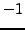
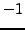
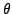
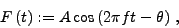

By default, two spectra (files s000000.dat and resspec.dat) are generated. The file s000000.dat contains the spectrum of the original time series, and the file resspec.dat represents the residual spectrum after finishing the prewhitening sequence.
The columns are
To achieve consistency with the output for differential significance spectra (see p. ), two further columns are found containing values  and
), two further columns are found containing values  and  only.
only.
The phase angles  are given according to a trigonometric fit,
|  | (9) |
If the keyword spectra is provided in the .ini file, additional output files s#iteration#.dat are generated. The index #iteration# starts with 000001, denoting the residual spectrum after the first prewhitening step.
The keyword spectra expects two integer parameters. The first defines the number of iterations for which these files shall be generated. A negative number causes SIGSPEC to generate files for all iterations. The second parameter has to be a positive number and defines a step width. If it is set 1, a file is generated after each iteration, if it is set 2, after every second iteration (starting with s000002.dat), and so on.
Example. The sample project output uses the keyword spectra in the file output.ini, namely
spectra 10 2
Spectra are written only during the first 10 iterations of the prewhitening sequence. The second parameter provides only every second file to be generated. In this example, the following files are produced:
output/s000000.dat
output/s000002.dat
output/s000004.dat
output/s000006.dat
output/s000008.dat
output/s000010.dat
In addition, the file resspec.dat contains the residual spectrum after all iterations.


Next: Residual time series
Up: Default Output
Previous: Default Output
Contents
Piet Reegen
2009-09-23